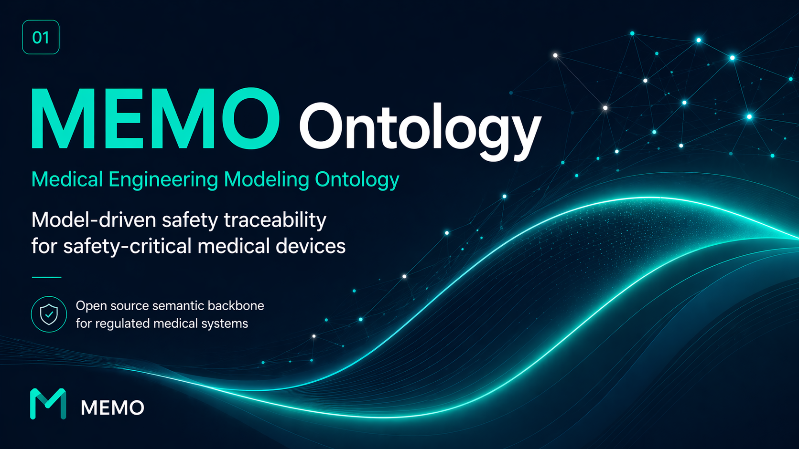
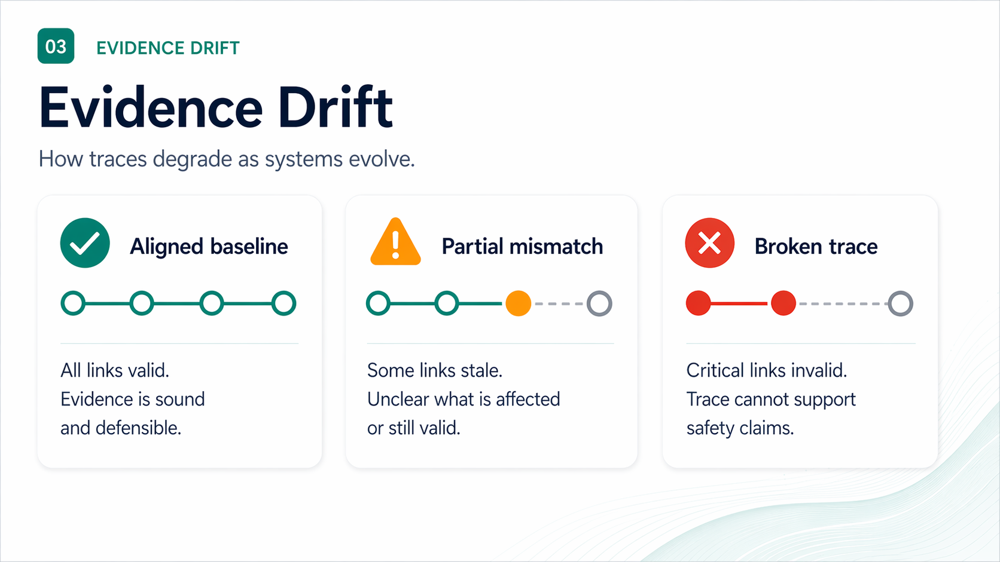

Medical Device Architecture Modeling as Code for Ontology-Backed Safety Assurance
Ontology-driven architecture and behavior models that analyze medical-device safety across static structure and dynamic clinical scenarios, turning trace links into computable assurance evidence.
It is 11 p.m. before an audit.
An engineer changes one line in REQ-145.
The next morning, nobody can answer:
"What evidence is still valid?" The diff was small. The safety case quietly stopped meaning what it said.
Medical devices are systems.
The evidence is stored as documents.
Requirements, architecture, hazards, controls, tests, and release records evolve in different tools, at different speeds, with different owners.
Evidence drift is the loss of alignment between the safety argument and the device baseline it is supposed to describe.

Different organizations. The same missing layer.
The operational pain looks different at a large manufacturer and at a startup, but both struggle to keep safety meaning synchronized with design change.
Rich process. Fragmented execution.
Scale creates handoffs: requirements, safety, software, systems, V&V, cybersecurity, and quality teams work in different repositories.
Installed products keep changing: a small component or interface decision can invalidate assumptions made years earlier.
Review becomes reconstruction: experts spend time proving what is still true.
Fast iteration. Thin infrastructure.
The team is small: the same people are inventing the therapy, building the product, and preparing design-control evidence.
Heavy tooling arrives late: architecture and risk knowledge accumulates in spreadsheets, tickets, and slide decks.
The regulatory valley is real: late rework burns runway.
Memo is the semantic layer between standards and tools.
The goal is not to replace the existing lifecycle. It is to make safety-relevant meaning explicit, typed, and checkable.
Standards and practice
ISO 14971 risk management
IEC 62304 software lifecycle
FDA design controls and cybersecurity expectations
ISO 42010 viewpoints and MBSE methods
A shared medical-device vocabulary with computable closure.
Define what a hazard, control, requirement, architectural element, verification case, and evidence artifact mean - and what must connect them.
Existing engineering ecosystem
Git and pull requests
QMS, ALM, requirements, and test tools
SysML v2 editors and APIs
Generated review views and DHF artifacts
What makes the model computable?
A diagram can show boxes and arrows. An ontology gives those boxes and arrows enforceable meaning.
Typed elements
Medical-device concepts are first-class model elements with stable identifiers and relevant attributes.
RiskControl
SoftwareRequirement
VerificationCase
Evidence
Typed relationships
Links express intent: source, satisfaction, allocation, verification, evidence production, and risk trace.
requirement → architecture
control → verification
verification → evidence
Closure rules
Rules surface missing evidence threads early, while engineers can still correct the architecture.
must trace to at least one
VerificationCase
One GPCA-style safety thread, end to end.
A small infusion-pump example is enough to show the value: the path crosses safety intent, static architecture, dynamic behavior, verification, and a compiled document view.
Now change is a graph question.
If the lockout requirement, infusion manager, or dynamic guarantee changes, an ontology-backed checker can identify the connected risk control, verification obligation, evidence record, and generated RMF view.
The important shift: re-verification scope is computed from explicit semantics, then reviewed by engineers. It is not reconstructed from memory during an audit.
You can implement the core pattern without Memo.
Start small. Pick one safety thread, encode its semantics, and make one missing-link condition fail in CI.
Choose a thread
Use one clinically meaningful path, such as overdose prevention or alarm response.
hazard → control → testDefine types
Name the minimum domain entities and required attributes. Keep the vocabulary small.
Hazard, RiskControl,
VerificationCaseDefine relations
Make the intent of each edge explicit instead of using generic hyperlinks.
mitigates, satisfies,
verifies, producesAdd closure rules
Write executable checks for incomplete or inconsistent safety threads.
RiskControl must have
VerificationCaseRun on change
Store the model in Git and execute checks on every reviewed baseline.
diff → impact →
review scopeMemo packages the pattern as open, inspectable infrastructure.
The repository is deliberately staged: SysML foundation first, CLI second, UI last. The components are intentionally replaceable.
Prototype developer loop
$ memo ontology show
inspect the resolved domain vocabulary
$ memo validate
run consistency and closure checks
$ memo build --single-file
compile a reviewable static workbench
$ memo dhf status
inspect generated evidence readiness
Current status: open reference implementation under active parser, native-constraint, and portability hardening. Study it, extend it, or reimplement the pattern.
What Memo solves - and what it does not.
Trust depends on being precise about the boundary.
Memo is designed to help teams...
- share a typed vocabulary across risk, architecture, requirements, and assurance
- surface missing or stale evidence threads earlier
- compute change-impact candidates and re-verification scope for expert review
- compile repeatable review views from a versioned baseline
- start incrementally with open, text-first infrastructure
Memo does not...
- certify a medical device or make safety-acceptability decisions
- replace a QMS, ALM platform, requirements tool, or test system
- prove that code is correct merely because the trace graph is complete
- remove the need for systems, safety, quality, and regulatory judgment
- claim production tool qualification in its current prototype state
Architecture as code is not about putting diagrams in Git.
It is about making safety intent computable under change. Start with one thread. Make its semantics explicit. Make one missing link fail early.